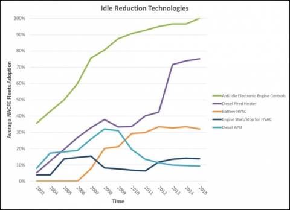

The National Idling Reduction Network brings together trucking and transit companies; railroads; ports; equipment manufacturers; Federal, state, and local government agencies (including regulators); nonprofit organizations; and national research laboratories to identify consistent, workable solutions to heavy-vehicle idling for the entire United States. Below is the September 2016 issue of the National Idling Reduction Network News; the archives are available on the Archives page and the latest issue is on the main NIRNN page.
Subscribe to the Newsletter
To receive NIRNN by e-mail monthly, please e-mail Patricia Weikersheimer or enter your email in the box on the right-hand side of the page. If you have news you believe would be of interest to newsletter readers, please send it to idlingreduction@anl.gov.
September 2016 National Idling Reduction Network News: From the Editor
NAFCE Provides Insights into Adoption of Idling Reduction Technologies
Since 2011 the North American Council on Freight Efficiency (NACFE) has surveyed as many as 17 major Class 8 North American fleets about their adoption of 69 different technologies and practices in regional and long-haul service. The latest report in the series, the 2016 Annual Fleet Fuel Study, offers very insightful information about these technologies and the rate of adoption by the fleets.
The adoption rate of new technologies for the unidentified fleets predictably shows that some fleets are early adopters while others may be less aggressive in adopting these technologies. Of course, the adoption rate can also depend on where the fleets primarily run their trucks. Air conditioning is less necessary in fleets that primarily run in the Northern states, while very desirable for fleets that run mainly in the South.
The data on truck stop electrification (TSE) also show clear differences between the use of TSE that uses an AC power port (Shorepower) and TSE that uses a snorkel-type connector (IdleAir). Only 4 of the 15 fleets use the former, while only 2 of the 15 use the latter.
Shorepower requires an inverter and an extension cord to hook up to its pedestals, for which the charge is $1/hour. Some Shorepower locations are equipped to provide power for transport refrigeration units (reefers). IdleAir hookups require a reusable $5 window adapter; a variable charge tops out at $2.19 per hour although discounts for considerably less are available. Based on the data above, it seems likely that the fleet owner does not cover the cost of plugging in although fleet discounts are available.
The graph below shows the migration of technologies since 2003 into the fleets responding to the survey. Diesel-powered APUs seem to be losing favor compared to battery-powered APUs. That could be because more states have raised the 400-lb weight exemption to 550 lb to align with the extra weight of a battery-powered APU. Battery-powered APUs do not require any exhaust aftertreatment, although they provide air conditioning for only about 10 hours before they need to be recharged. Adoption of diesel-fired heaters is an inexpensive choice for a fleet whose trucks run mainly in the colder states and do not need air conditioning.

From NACFE’s 2016 Fleet Fuel Study. Used with permission of NACFE.
Please let us know if this information matches your experience.
Terry M. Levinson, Editor
Allegheny Science & Technology
tlevinson@alleghenyst.com
Patricia Weikersheimer, Writer
Argonne National Laboratory
pweikersheimer@anl.gov
Solicitations for Funding and Awards
Program (with link to website) — Organization — Funding Amount — Due Date (Information new since last month in boldface.)
Deadline in Chronological Order
-
Ohio Diesel Emission Reduction Grant Program — Ohio Environmental Protection Agency (EPA) and the Ohio Department of Transportation — ~$12 million — October 7, 2016.
-
North Carolina Diesel Emissions Reduction Grant Program — North Carolina Department of Environmental Quality, Division of Air Quality — ~$231,500 — October 28, 2016.
-
Goods Movement Emission Reduction Program (GMERP) — San Diego County Air Pollution Control District — ~$5.5 million — October 31, 2016.
-
EPA Clean Diesel Rebate Program for School Buses — U.S. EPA — ~$7 million — November 1, 2016.
-
Airport Emissions Reduction Call for Projects — North Central Texas Council of Governments (NCTCOG) — $600,000 — November 18, 2016.
-
Making Transportation Smart and Sustainable — New York State Energy Research and Development Authority (NYSERDA) — $3 million — November 29, 2016.
-
Vermont Clean Diesel Grant Program (Seeking information from potential project partners) — Vermont Department of Environmental Conservation — Not applicable — Not applicable.
First Come, First Served
-
Carl Moyer Memorial Air Quality Standards Attainment Program — Bay Area Air Quality Management District (BAAQMD) — ~$11 million.
-
Clean Air Fleets (GPS and retrofit technologies to support idling reduction in the Denver Metro area and Colorado Front Range) — Colorado Regional Air Quality Council — ~$1 million.
-
Clean Fuel Transition Fund for Public Fleets (includes idling reduction) — Southeast Louisiana Clean Fuel Partnership — $909,200.
-
New York State Electric Vehicle Voucher Incentive Fund (NYSEV-VIF) — New York State Energy Research and Development Authority (NYSERDA) — $9 million.
Rolling Deadline Until Funds Are Awarded
-
Business Assistance Program, Environmental Loans for Small Businesses — Arkansas Department of Environmental Quality — Indeterminate.
-
On-Road Heavy-Duty Vehicle Loan Program — California Air Resources Board (CARB) — ~$48 million for loan guarantees.
-
Illinois Clean Diesel Grant Program (school buses) — Illinois EPA — $1.7 million.
-
Driver Recognition Program: Diesel Idle Reduction Campaign — Metropolitan Washington Council of Governments (COG), in collaboration with the District Department of the Environment, the District Department of Transportation, and the Maryland Department of the Environment — Not applicable — Rolling deadline: the 15th of every month.
-
Small Business APU (auxiliary power unit) Loan Program — Minnesota Pollution Control Agency — $110,000.
Awards and Recognition
Awardee — Source of Award — Purpose of Award — Award Amount
-
eNow — San Joaquin Valley Air Pollution Control District — Demonstration project on the use of solar panels for ultra-low emissions truck refrigeration — $400,000.
Regulatory News
California Commits to Stricter GHG Regulations
California Governor Edmund Brown has signed Senate Bill (SB) 32, legislation mandating that the state reduce greenhouse gas (GHG) emissions to at least 40% below 1990 levels by the end of 2030. A related bill signed by the governor, Assembly Bill (AB) 197, calls for heightened investment in the communities hardest hit by climate change and the establishment of a legislative committee to help ensure that GHG emissions-reduction activities are conducted with transparency and accountability. “SB32 extends California's landmark greenhouse gas reduction goals. AB197 changes the game on how we make sure those goals are reached,” said California Assembly Speaker Anthony Rendon.
Subsequent fiscal bills signed by the governor authorize $133 million for the state’s Clean Vehicle Rebate Program, $80 million for the Enhanced Fleet Modernization Program and Plus-Up Pilot Project, and $150 million for heavy-duty vehicles and off-road equipment investments.
The state of California attributes nearly 40% of its GHG emissions to the transportation sector. Please go to the California Governor’s website for more information on SB32 and AB197 and on the bills allocating funds for GHG-reduction initiatives.
EPA Sets Groundwork for Aircraft GHG Standards
The U.S. EPA has finalized a determination that GHG emissions from some aircraft engines, primarily large commercial jets, contribute to climate change. According to an EPA press release, aircraft are the third largest contributor to GHG emissions in the U.S. transportation sector, with future emissions expected to increase.
This determination sets the groundwork for EPA to establish GHG standards for aircraft engines under the Clean Air Act. For more information, please see the EPA's aviation web page.
Reports and Other Resources of Interest
-
100 Trucking Efficiency Tips (Fleet Owner)
-
Be Idle Free at Wasatch Front School (Good4Utah.com)
-
The California Sustainable Freight Action Plan (California State Transportation Agency, California Environmental Protection Agency, et al.)
-
FAQs for Beneficiaries to the VW Mitigation Trust Agreement (U.S. EPA)
-
Freight Matters: SmartWay and Global Green Freight Action (U.S. EPA)
-
GHG 2: Out with the Old and In with the New (Fleet Owner)
-
New EPA Emissions Standards Target Idling Trucks (Trucks.com)
Upcoming Meetings and Events
Name of meeting [with Link to Website] Date (Location) (Information new since last month in boldface.)
-
Webinar: U.S. EPA School Bus Rebate Program October 7, 2016
-
Fleet Technology Expo October 17–19, 2016 (Schaumburg, Illinois)
-
7th Annual Northern California Clean Technology Forum and Technology Expo October 19–20, 2016 (Sacramento, California)
-
Transportation Research Board (TRB) 96th Annual Meeting January 8–12, 2017 (Washington, D.C.)
-
SAE Government/Industry Meeting January 25–27, 2017 (Washington, D.C.)
-
Green Truck Summit March 14–16, 2017 (Indianapolis, Indiana)
-
NTEA Work Truck Show March 14–17, 2017 (Indianapolis, Indiana)
-
Green Transportation Summit & Expo April 11–14, 2017 (Portland, Oregon)
-
National Association of Fleet Administrators (NAFA) Institute and Expo April 25–28, 2017 (Tampa, Florida)
-
Advanced Clean Transportation (ACT) Expo May 1–4, 2017 (Long Beach, California)
-
Government Fleet Expo & Conference (GFX) June 12–15, 2017 (San Antonio, Texas)
-
CARB Course 521.7: CARB Diesel Truck Rules—Compliance Options and Reporting Requirements for 2017 (Multiple dates and locations)
-
CARB One-Stop Truck Event (Multiple dates and locations)
Manufacturers' News
Carrier Transicold: New Light-Duty Refrigeration Solution
Carrier Transicold has introduced a refrigeration solution for florists, grocers, and other businesses that depend on small refrigerated trucks and delivery vans. According to a company press release, unlike a conventional direct-drive refrigeration unit with a belt-driven compressor mounted to the vehicle engine, the Neos 100S unit uses the vehicle’s alternator to power the system, which enables constant cooling capability for cargo regardless of engine speed.
The Neos 100S is rated to provide 3,600 BTU of cooling at a set point of 35°F and 100°F ambient, whether on the road or in standby mode. The optional electric-standby option enables the unit to be plugged in when the truck is parked, eliminating the need for engine idling to maintain refrigeration. More information is available at Carrier’s website.
New Engine Coolant Preheater from Eberspaecher
Eberspaecher has launched its third-generation Hydronic series engine-coolant preheater. The Hydronic S3 Economy (5-kW) preheater is suitable for installation in day cabs, sleepers, off-highway and construction equipment, buses, work trucks, and marine vehicles. It is compatible with vehicles running on gasoline, diesel, E10, and B30.
The new, compact preheater is CARB approved. Please see Eberspaecher’s website for more information.
eNow and Vanner Partner
eNow, which develops solar-based idling-reduction systems for a range of vehicles including trucks and buses, has announced a channel partnership with Vanner. Vanner, a provider of energy-management solutions for commercial vehicles, will sell eNow’s solar panels to the commercial, transit, and school bus markets.
eNow’s solar-based technology provides engine-off power for lighting, HVAC, refrigeration, lift gates, and battery charging. More information is available at eNow’s website.
Ports
EPA Seeks To Reduce Emissions at Ports
The U.S. EPA has published “The National Port Strategy Assessment: Reducing Air Pollution and Greenhouse Gases at U.S. Ports.” The report examines current and predicted future emissions from port-related vehicles, including trucks, locomotives, cargo-handling equipment, harbor craft, and ocean-going vessels, and explores available strategies, including idling reduction, to reduce emissions. Of particular interest at ports is the significant amount of time that drayage trucks spend in idle/creep mode.
With the continued growth of international trade, U.S. port operations will expand significantly, making emissions reductions at ports critical. Visit EPA’s National Port Strategy Assessment web page for more information.
Additional Idling Reduction Resources
Please visit the Vehicle Technologies Office's Idle Reduction webpage for links to more idle reduction resources, including an idling reduction savings calculator (xls calculator and printable pdf calculator), Locations of Electrified Parking Spaces, Status of the Weight Exemption for Idling Reduction Devices, and back issues of National Idling Reduction Network News. Other resources include IdleBox, an electronic, modular toolkit to facilitate idling reduction outreach and implementation, IdleBase, a database of idling regulations for all classes of on-road vehicles, and the Alternative Fuels Data Center idle reduction page.